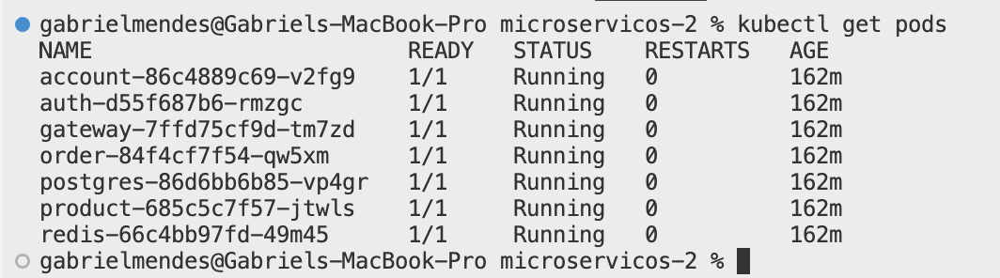
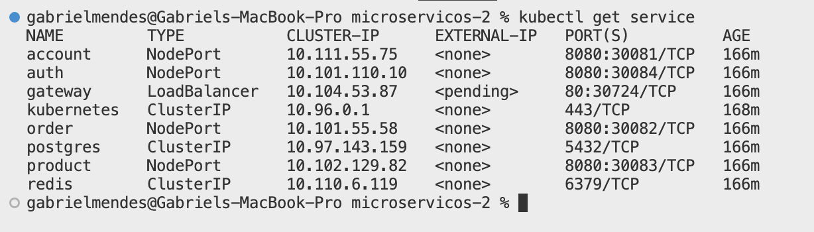

MiniKube
Objetivo
Este guia descreve como executar todos os microserviços em um cluster Kubernetes local usando o Minikube, simulando um ambiente de orquestração completo em sua máquina de desenvolvimento.
Pré-Requisitos
- Docker instalado e em execução
- Minikube instalado (versão recomendada: >= 1.0)
- kubectl instalado e configurado para se comunicar com o Minikube
- Privilegios de sudo (caso seja necessário para o uso de determinadas funcionalidades)
Passos para Iniciar
1. Iniciar o Minikube
No terminal, execute:
minikube start --driver=docker
O exemplo acima utiliza o driver Docker, mas você pode substituí-lo por outro (como “virtualbox” ou “hyperkit”) conforme sua configuração local. Para mais detalhes, consulte a documentação oficial do Minikube.
Aguarde até que o Minikube faça o download da imagem base, inicie uma VM (ou container) e configure o cluster local.
2. Clonar e Navegar até o Projeto
# Exemplo de comando para clonar o repositório, se ainda não tiver feito:
git clone https://github.com/seu-usuario/seu-projeto.git
cd seu-projeto/platforma/api/k8s
No diretório k8s/, você encontrará arquivos YAML para cada microserviço:
account-serviceauth-serviceexchange-servicegateway-serviceorder-serviceproduct-servicepostgres-service
3. Aplicar Todos os Manifests
Para criar todos os recursos de uma só vez, rode:
kubectl apply -f .
Este comando processa todos os arquivos
.yaml(ou.yml) do diretório atual, criando Deployments, Services, ConfigMaps, Secrets etc.
4. Verificar Status
4.1. Pods
kubectl get pods
$ kubectl get pods
NAME READY STATUS RESTARTS AGE
account-service-XXXXXXXXXX-XXXXX 1/1 Running 0 10m
auth-service-XXXXXXXXXX-XXXXX 1/1 Running 0 10m
...
postgres-service-XXXXXXXXXX-XXXXX 1/1 Running 0 10m

Verifique se todos os pods estão com o STATUS Running e sem erros. Caso algum esteja com STATUS CrashLoopBackOff ou Error, inspecione os logs:
kubectl logs <nome-do-pod>
4.2. Serviços
kubectl get svc
Confira se cada serviço (Service) está exposto corretamente e possui o Cluster-IP ou NodePort configurado.
$ kubectl get svc
NAME TYPE CLUSTER-IP EXTERNAL-IP PORT(S) AGE
account-service ClusterIP 10.96.0.10 <none> 8080/TCP 10m
auth-service ClusterIP 10.96.0.11 <none> 8080/TCP 10m
gateway-service ClusterIP 10.96.0.12 <none> 80/TCP 10m
...

Acessando a Aplicação
5. Acessar um Serviço via Navegador
Se quiser expor um serviço (por exemplo, o gateway-service) localmente, utilize:
minikube service gateway-service
O Minikube criará automaticamente um túnel temporário e abrirá o serviço no navegador. Caso não abra automaticamente, será exibido o URL que pode ser acessado manualmente.
⚠️ Dica: Em alguns sistemas, pode ser necessário usar
minikube tunnelem outro terminal para expor serviços do tipo LoadBalancer.
Arquitetura do Diretório k8s/
k8s/
├─ account-service.yaml
├─ auth-service.yaml
├─ configmap.yaml
├─ deployment.yaml
├─ gateway-service.yaml
├─ order-service.yaml
├─ product-service.yaml
├─ redis.yaml
├─ secrets.yaml
└─ service.yaml
- Cada microserviço contém um arquivo
k8s.yamlque define o Deployment e o Service. - O serviço do
postgrespossui ConfigMap, Secrets, Deployment e Service separados para maior flexibilidade.